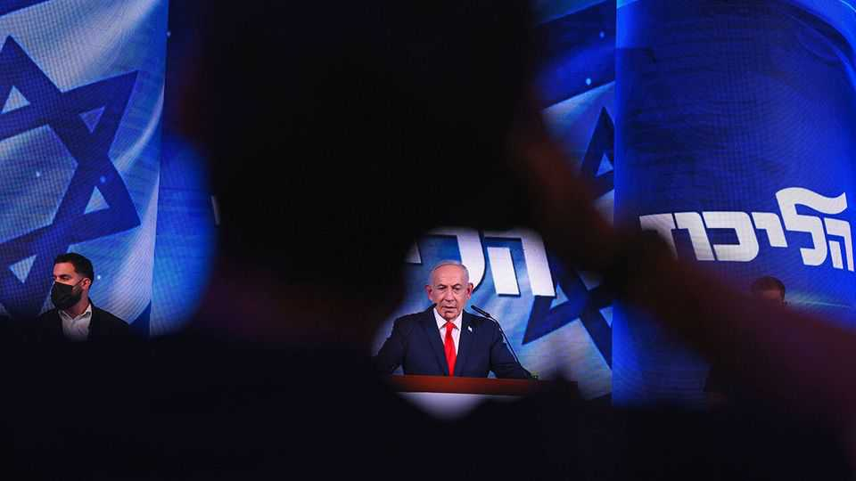
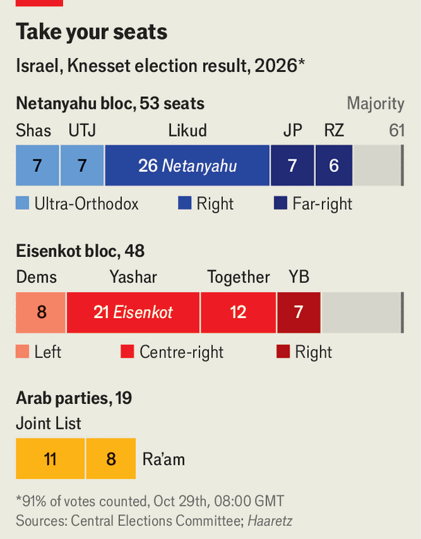

Binyamin Netanyahu has not won, but nor has he lost
Refusing to work with the Arab parties may be his opponents’ undoing

Oct 29th 2026
Binyamin netanyahu took to the stage in the early hours of October 28th knowing he had almost certainly lost his majority. And yet Mr Netanyahu and his Likud party supporters were jubilant. Likud lost some seats but it is still Israel’s largest party. The coalition was punished by the voters for what most Israelis perceive as the failures by Mr Netanyahu that led to the massacres of October 7th 2023 and for his coalition’s divisive policies. But the beating was not nearly as severe as most pollsters had predicted. More important, Likudniks reckon that even though the opposition has won an outright majority, it is incapable of forming a coalition to replace their own. They are probably right.
With over 90% of the vote counted Mr Netanyahu’s coalition had won 53 of the 120 seats in the Knesset, Israel’s parliament. The final result, still being tallied as The Economist went to press, is not expected to change much: the prime minister will not have the seats to form a new government. Israel’s opposition is divided into two blocs. The main one, consisting of four mostly Jewish parties, is expected to win 48 seats. The second, made up of predominantly Arab parties, is on track to win 19 seats, the most Israel’s Arab minority has ever won. Together, the two blocs could command a clear majority.

But of the four Jewish opposition parties, only one, the left-leaning Democrats, has explicitly said it would go into government with the Arab parties. Two larger opposition outfits are much more reluctant. Yashar, led by a former Israel Defence Forces chief, Gadi Eisenkot, and Yachad (Together), led by two former prime ministers, Naftali Bennett and Yair Lapid, have been evasive. Avigdor Lieberman, leader of Yisrael Beiteinu, a nationalist opposition party, has categorically ruled out relying even informally on the Arab parties.
For their part, the Arab parties are willing to co-operate. Under Mansour Abbas, Ra’am, a moderate Islamist group, has been eager to be part of the government since 2018. Mr Abbas reckons that is the best way to promote the interests of Israeli Arabs. The Joint List, which is a bigger electoral alliance of Arab, communist and Palestinian-nationalist parties, has been warier. Joining a coalition would mean taking joint responsibility for policies, such as security, which it opposes. But on October 10th Yousef Jabareen, leader of the Joint List, said that the group would use “all the tools” at its disposal to replace the Netanyahu government and that it would “serve as a safety net” for a new coalition, even if it would not become a member of it.
Before the election Mr Eisenkot and other Jewish opposition leaders acknowledged in private that they would need the Arab parties’ seats. They touted the idea of a minority government that would rely on a confidence-and-supply deal with the Arab parties. But they made no public overtures.
Mr Netanyahu had spent the campaign accusing his opponents of planning to bring the Arabs into government. In an ai-generated video, Mr Eisenkot was portrayed astride a wooden Trojan horse, with Mr Abbas and Yair Golan, the leader of the Democrats, lurking inside. Mr Golan pointed out that there was nothing wrong with co-operating politically with Arab Israelis. Mr Eisenkot and the other party leaders ducked the question.
In the election of 1992, the Arab parties supported Yitzhak Rabin, the Labour leader, blocking Likud’s path to power. They did not formally join Mr Rabin’s government but backed it on crucial votes and in return got increased funding for their communities. The then leader of Likud, Yitzhak Shamir, accepted defeat without question. But his successor, Mr Netanyahu, made delegitimising the Arab vote one of his core political aims.
In his first election as Likud leader in 1996, Mr Netanyahu ran with the slogan “Netanyahu: Good for the Jews”. In 2015 he released a video on election day warning his supporters that “the Arab voters are heading to the polling stations in droves” and urged them to do the same. Accusations that his opponents planned to sit in government alongside “terror-supporting” and “Muslim Brotherhood” Arab parliamentarians have been a constant in his campaigns, even though in 2021, after failing to form a coalition, he himself talked to Mr Abbas about joining one. His hard-right allies kiboshed those talks. Mr Abbas joined a short-lived (previous) coalition led by Mr Bennett and Mr Lapid instead.
Mr Netanyahu was at it again this time. “The right-wing bloc has an overwhelming majority in the Zionist public, the Jewish public,” he said on election day. “It is simply forbidden to risk Israel and form a government that relies on anti-Zionist Arab parties that oppose our very existence.”
He and his coalition had been languishing in the polls ever since the attacks of October 7th. When at last they went to the country, they were widely expected to be drubbed and turfed out of office. That the coalition was not thoroughly trounced is partly because Mr Netanyahu stoked anti-Palestinian fears. This may not have boosted his own popularity, but it helped reduce support for his opponents. “I detest Netanyahu and his coalition,” says Shmuel Davidson, a software engineer from Tel Aviv. “But I can’t vote for an opposition which may co-operate with the Arab parties who want to kill me.”
Most of the Arab politicians condemned the attacks of October 7th, but some were tone-deaf. A member of the Knesset from Ra’am described Hamas as “partly a charity organisation”. Sami Abu Shehadeh, leader of Balad, one of the parties in the Joint List, called the massacre “an important historic event, militarily, politically and strategically” from which others could learn. Such statements helped Mr Netanyahu stoke Jewish Israeli fears that their Arab neighbours, who mostly identify as Palestinian, are on the opposite side in the Israeli-Palestinian conflict.
Desperate to see the back of the ruling coalition, Arabs turned out on October 27th in the highest numbers in decades. And their party leaders had been reaching out to their Jewish counterparts. “The Arab representation should bring influence and partnership,” said Mr Abbas on election night. “We are ready and prepared to pave the way for ousting the Netanyahu government,” Mr Jabareen posted on social media the next day. “Change comes through Jewish-Arab partnership.”
Their Jewish counterparts have yet to respond. In speeches on election night, Messrs Eisenkot, Bennett and Lapid all spoke of trying to form “a Zionist government”, without mentioning the Arab parties and their impressive gains. Since then, they have been silent. One opposition Knesset member suggested that, when the new legislature is sworn in on November 10th, Jewish and Arab opposition parties could co-operate in electing a new speaker and take control of parliamentary business. If such a move were successful, it could perhaps lead to coalition talks. But a senior aide to an opposition leader poured cold water on such ideas, saying it was more likely some of the parties would seek a unity government with Mr Netanyahu, rather than with the Arabs.
So far, in the Jewish opposition bloc, only Mr Golan has suggested a different course. “We must no longer accept Netanyahu’s racist division between Jewish votes and Arab votes,” he said the day after the election, calling for “a government that serves all Israeli citizens”.
But Mr Netanyahu seems confident he can bide his time while the opposition blunders. Even without a majority, he will stay on as caretaker prime minister; he still seems hopeful that Donald Trump might yet agree to join him in further military strikes on Iran after America’s midterm elections. Israel has a unique opportunity, he declared on election night, with “our partner, President Trump, to remove the Iranian threat once and for all”. Should Mr Trump decide to join another attack, or to let Israel launch one, Mr Netanyahu feels sure some of his foes would join a unity government under his leadership, or that he would be able to run down the clock on coalition talks and gamble on another election in early 2027. ■